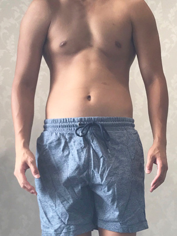

— Articles
20代のやり方では、もう変わらない。
NEXUS約60店舗で観察した、30〜40代の体に効く方法。

このカテゴリでは、以下のテーマで順次記事を公開予定です。
約60店舗の現場で見てきたリアルな知見を、坂本宗瞳が執筆中です。
30〜40代女性の現実的なダイエット目標と、達成のための具体的な道筋。
体重数値より大事な、見た目の変化を実感するタイミング。
停滞期を3ヶ月で抜け出した30代女性の実体験から学ぶ突破方法。
公開のタイミングは、FAQページや本ブログをご確認ください。